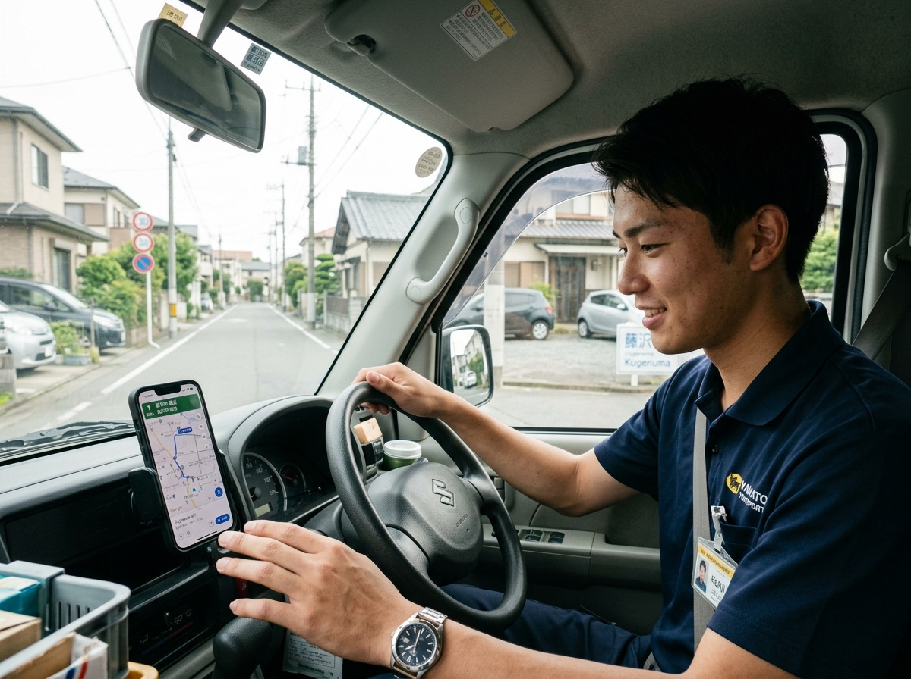
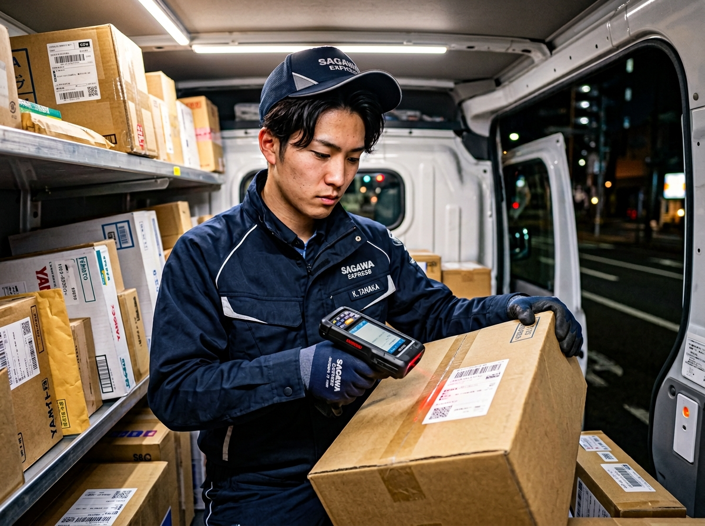
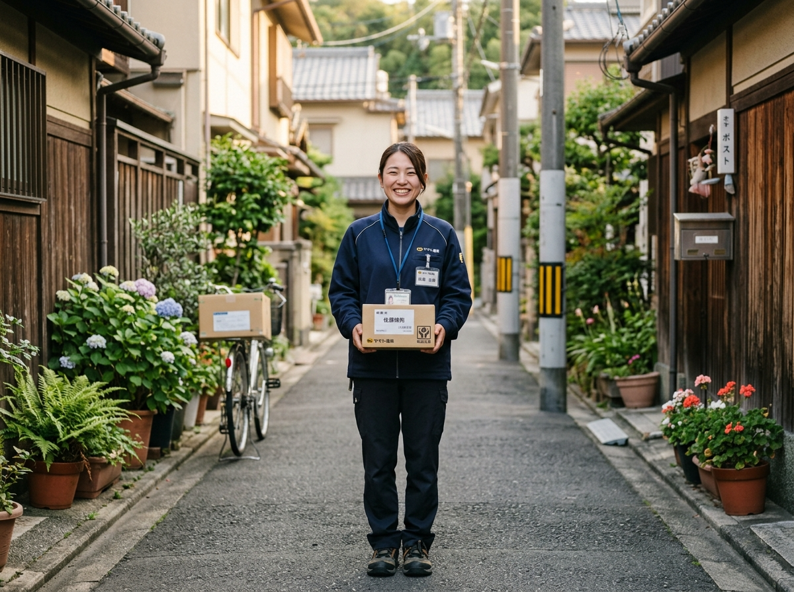
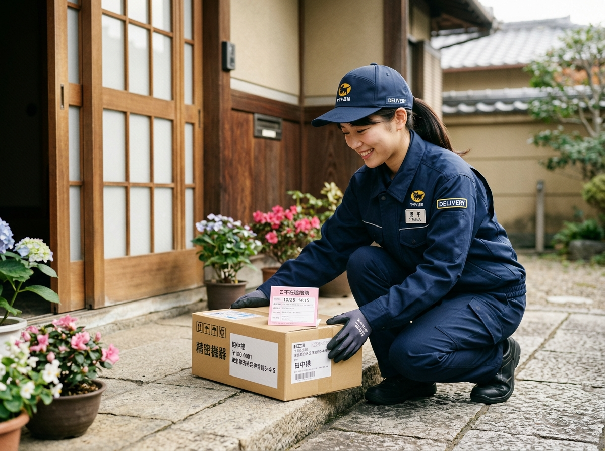
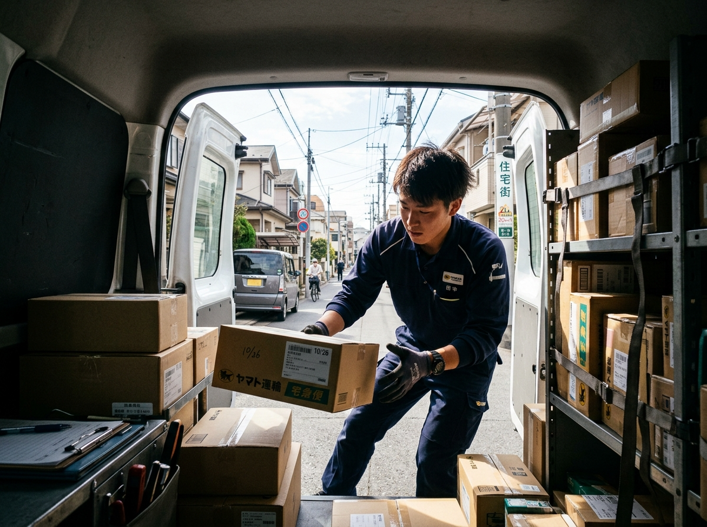

R
Rさん（27歳）
前職：工場勤務
固定シフトの働き方が合わず転職しました。今は配送量を自分で調整できるので、収入と休みのバランスを取りやすいです。3か月目から月収50万円台に乗り、生活面の不安が減りました。
VALEKは愛知県を中心に、軽貨物配送ドライバーを積極採用中です。経験・学歴・年齢・性別は一切不問。完全未経験からスタートした先輩たちが、今では月収60万円以上を安定して稼いでいます。
朝に営業所で荷物を積み込んだら、あとは自分のペースで配送。わざわざ営業所に戻る必要はありません。自分のスタイルで効率的に働ける環境です。
平均年齢は25〜26歳。年齢が近い仲間が多く、雰囲気は抜群。困ったときは気軽に相談できるフラットな環境が整っています。
元シェフ、元水族館スタッフ、元自動車メーカー勤務など、バックグラウンドはさまざま。配送経験がなくても、研修制度があるので安心してスタートできます。
しっかり休みながら安定した収入を得たい方も、ガッツリ稼いで年収1,000万円を目指したい方も、自分に合った働き方を選ぶことができます。
ワークウェアブランド「BURTLE」の制服を貸与。新ロゴをあしらったデザインで、見た目もかっこよく、モチベーション高く仕事に取り組めます。
自社のリース車両（黒ナンバー）をご用意していますので、車をお持ちでない方でもすぐに業務をスタートできます。車のメンテナンス等もサポートするので安心です。
※あくまで目安です。荷物がなくなり次第業務終了。休憩は自分のタイミングで取れます。





1件あたり160円〜の完全歩合制。頑張った分だけ収入に直結します。
※品質評価による単価アップ制度あり（10円単位で随時評価）。車両自己保有の場合、手取りはさらに増えます。
応募から最短1週間で勤務開始OK。電話・LINE・フォームからお気軽にどうぞ。